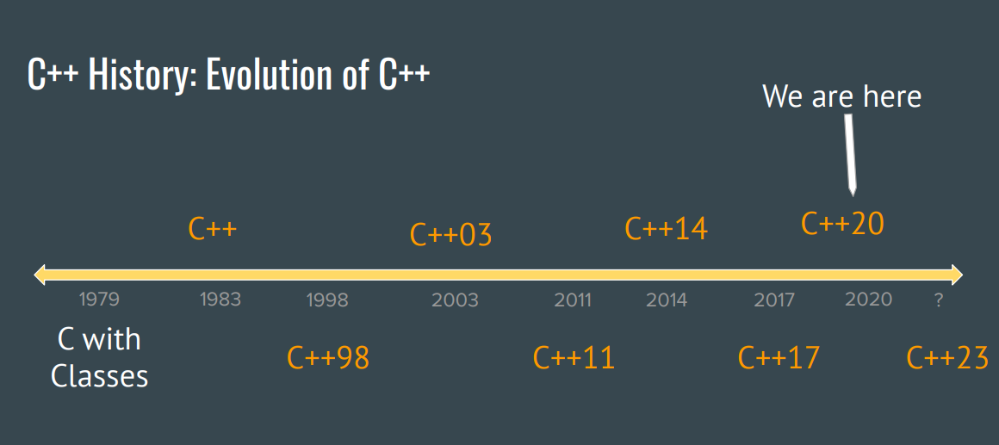

# 课程资料
- Video
- Slides/Code
- Course Reader
- Assignment
- AP1401-2
- Spring 2021 资料
- 综合资料
- 特别版视频
# 学习流程
for(int i = 0; i < 17; i++) {
1. 观看video
2. 阅读Slides + Code
3. (Optional)阅读 Course Reader对应章节
4. 完成AP1401-2对应作业
5. (Optional)完成Assignment对应作业
}
# Welcome
本节课主要讲述了 C++ 的应用前景，历史发展和设计哲学。
# C++ 应用前景

# C++ 的历史
# 汇编语言
在早期阶段，尚没有高级语言这一说。程序员大多使用汇编语言编写程序，汇编语言的好处在于：
- 使用较为简单的指令进行编程
- 汇编语言执行速度较快
- 程序员可以直接操作计算机底层寄存器等
但是，汇编语言编程也有它的缺陷，缺陷就在于：
- 程序涉及到对计算机底层硬件的基础操作，而不只是处理逻辑，因此对其他程序员来说，阅读起来较为困难
- 因为汇编语言涉及到指令集架构，而指令集架构和计算机底层硬件和操作系统紧密相关，因此在一台机器上运行的程序可能无法迁移到另一台程序，简单来说就是可移植性较差
- 汇编语言编写的程序因为使用的是一些基本的操作，因此程序较长
因此， Ken Thompson 和 Dennis Ritchie 于 1972 年发明了 C 语言。
# C 语言
C 语言是一门高级语言，相较汇编，它的优势在于：
- 面向过程编程，较为简单。程序员在编写程序时，无需考虑计算机底层架构，而只需要考虑处理逻辑，因此编程较为简单
- C 语言可以由编译器编译为汇编指令，在不同的机器上，可以编译出不同的汇编指令，而后汇编器又可以将汇编指令转化为针对该计算机指令集架构的机器指令，实现 C 语言的可迁移性
- C 语言程序执行速度非常快
然而，在面对更复杂的编程问题时，C 语言也表现出了它的不足：
- C 语言是面向过程的语言，它无法面向对象。当我们需要更复杂的结构和它的一系列方法时，C 语言只为我们提供了一些有限的结构，无法满足我们对高级结构的需求
- C 语言无法对不同类型提供一个泛化的模板，对于不同类型的传入参数，我们可能需要重复写多个几乎一致的处理函数
- 写大型项目时，很多时候很难将一个问题拆解为一个面向过程的模型，不是所有问题都可以使用模块化的过程方法解决
- 写出来的程序较长
# C++
针对 C 语言的问题， Bjarne Stroustrup 于 1983 年开发了 C++ 语言，他希望能够在 C 语言基础上实现一个具有多种不同特性的高级语言。 C++ 语言一开始只是 C with classes ，实现了 C 语言面向对象的延伸。而后逐步发展，直到今天的 C++23 。

# C++ 的几大特性
- 通用语言
有的语言可以在应用到多个场景中，但是在解决特定场景问题时会显得复杂，比如 C++ 在做矩阵乘除法时，需要程序员手动编写程序，效率较低。但是 C++ 的用途很广。而有的语言，可以解决特定问题，但是并不泛用。比如 Matlab 在做科学计算时非常的常用，但是在解决其他问题时并没有 C++ 高效。 - 编译型语言
高级语言需要转换成机器可以阅读的二进制码才能被计算机执行。而高级语言分为编译型和解释型。其区别在于，解释型语言使用解释器 (Interpreters) 进行翻译，一边翻译一边执行。解释器在执行一条语句的同时，获取下一条语句。而编译型语言使用编译器进行编译。将整个源代码编译完成后，直接执行生成的二进制码。 - 静态类型语言
静态类型语言是指语句中的每个变量在声明后都有固定的类型，一旦确定，不能随意更改。而动态类型（如 Python、Javascript）会在执行的过程中动态的判断变量的类型。静态类型语言会在编译阶段检查语句是否合法，否则产生编译错误。而动态类型通常无法在编译阶段确定该语句是否有编译错误，错误均在程序运行时产生，也称为运行时错误。编译阶段排错让运行时错误出现的概率大大降低。这样无需运行即可排除程序错误。 - 多范式语言
部分语言只有单一范式，如 C 语言，无法编写面向对象程序。而 C++ 可以同时实现面向对象特性，泛型特性，和面向过程的特性。非常灵活。 - 中间语言
部分底层语言（如汇编）直接和计算机内存打交道，但是利用其写出的程序逻辑不清晰，难以理解。而部分语言无法直接对计算机底层进行操纵（如 Python、Java) 等，程序员在编写程序时就像是被禁锢，无法探索底层的奥秘。C++ 可以像 C 语言那样接触底层硬件（利用指针），也可以利用其面向对象特性构造大型程序，同时实现封装和抽象。触及底层系统和实现抽象的目的同时达到，非常便于程序员大展身手。
# C++ 的设计哲学
- 只有在需要解决特定问题时引入新的特性
- 程序员可以自由选择编程风格
- 隐藏实现细节，抽象出编程接口
- 让程序员能够完全以自己想要的方式编写程序
- 让编写的程序尽可能高效
- 编译时进行类型检查
- 可以兼容早期版本程序，也兼容 C 语言程序
# C++ 的应用
- 浏览器
- JVM
- 火星探索车
- 等等
# Type and Structs
# Streams
# Streams Overview
# Environment
在学习 Stream 之前，我们先要了解 Environment （环境）的概念。我们家里有温度计，我们通常通过温度计上的水银球去检测环境温度，然后将摄氏度显示在数轴上，人们通过观测数轴上的数字来查看当前温度。在这个例子中，外界就是环境，水银球就是将温度转化为实际示数的媒介，而数轴就是温度的输出，将温度显示出来供人们了解。而在程序编写的过程中，也可能存在一个外部环境，程序需要从这个环境获取信息，然后在利用一些处理逻辑来进行一些计算，最后返回输出或者将输出打印在屏幕上。这个环境可能是用户输入，也可能是外部文件，还有可能是其他程序。
# Stream 是什么
Stream 是程序与外部环境交流的媒介。Stream 的输入与输出可能来自用户，也可能来自程序，也可能来自其他文件。如果要将一个变量输出到终端，那么变量就会以字符串的形式打入 Stream，然后 Stream 将其输出到终端。如果要从用户输入读取数据，那么也是将用户输入转化为字符串存储在 Stream 中，然后再将其转储到变量中。
# Stream 特点
- 可以对大体积数据进行分片读取，然后存储
- 可以读取多个类型的数据
- 可以串联多个
<<读取
# cin 与 cout：来自键盘，去往终端
cout 为 Stream 对象，它从变量中获取数据，存储到一个 Buffer 中，然后将其输出到终端上。
cin 也是 Stream 对象，它从用户输入获取值，存储到一个 Buffer 中，然后将其转储到对应类型的变量中。
# ifstream 与 ofstream：来自文件，去往文件
问题思考：
ifstream和ofstream分别是什么？- 还有什么特殊的读写文件类？特殊在哪？
i/ofstream和cin/cout在使用上有什么不一样之处？- 使用
ifstream和ofstream需要包含什么头文件？ ifstream怎么初始化？初始化后需要做哪些检查？ofstream怎么初始化？初始化后需要做哪些检查？- 如果传入的文件名是
string类型，如何处理？ close()时有哪些需要注意的地方？
# ifstream & ofstream Overview
ifstream 和 ofstream 分别从文件读取和写入文件 (此外，还有一个叫做 fstream 的类型，即可以完成写入，又可以完成读取）。此外， ifstream 和 ofstream 在使用上与 cin/cout 不一样之处在于， ifstream 和 ofstream 是一个类型，而不是一个对象，但是 cin 及 cout 是一个对象。在使用对象的方法时 ( << 和 >> 已被重载) 可以直接调用，但是在使用一个类的方法时，首先需要初始化这个类的一个对象，然后再对其方法进行调用。
# ifstream & ofstream 使用说明
# 包含头文件
#include <fstream>
# ifstream 初始化 & 使用
可以直接使用构造函数，在参数列表中填入文件名进行初始化：
ifstream myStream("file.txt");
也可以在使用默认构造函数初始化后，利用类的 open() 方法打开文件：
ifstream myStream;
myStream.open("file.txt");
使用 ifstream 对象的方法与使用 cin 相似，如下：
myStream >> myInteger
注意，在 open() 方法调用后，推荐使用 myStream.is_open() 来探测是否真的成功打开了文件。
# ofstream 初始化 & 使用
ofstream 初始化过程及使用过程与前文 ifstream 相似。若文件不存在，调用 open() 方法会新创建一个文件，否则会覆盖原有的同名文件。（所以尽量做好备份）
# 关闭流： close()
- 当流的生命周期结束时，C++ 会为你自动关闭流
- 你也可以手动使用
close()方法关闭流
# 使用 string 作为文件名时…
注意， string 类的开发时间要晚于 ifstream 和 ofstream ，彼时 ifstream 和 ofstream 只接受 C 语言的字符串类型。因此，要将一个 string 类型的文件名传入这两个类的对象，我们必须调用 .c_str() 来将其转化为 C 语言格式的字符串。
# Stream manipulators
stream manipulator 可以让对变量及输出的处理更加方便，程序员无需手动编程实现一些较为繁琐的功能。几种常用的 stream manipulator 如下：
endl: 输出后换行setw: 设置输出的宽度left/right: 通常与setw连用，表示左补空格 / 右补空格setfill: 在宽度一定，文字没有填满处补充特定的占位符boolalpha: 用true/false表示1/0hex: 将输入输出理解为 16 进制dec: 输入输出为 10 进制oct: 输入输出为 8 进制ws: 跳过所有的空格
# Stream 异常处理
在使用 stream 进行读取时，可能会出现读取异常的情况，比如读进来的值是个字符串，但是程序想把它保存到一个 int 类中，这样就产生了类型异常。我们需要在读取后使用 cout.fail() 或 cin.fail() 来判断读取是否成功，如果有异常，我们需要手动处理异常，然后用 cin.clear() 表达异常已经处理完毕。
注意，在使用 while 循环进行读取时，尽量把异常判断放在 while 循环内，如果判断到异常则退出，否则就进行下一次读取。不要把 while 循环放在条件判断中，否则可能会导致读取异常后依然在进行输出，因此尽量使用如下的结构。
while(true) {
...
if(cin.fail())
break;
...
}
因为 stream 在读取到最后或读取错误时会返回 false ，而其他情况下会返回 stream 对象本身（也可以判断为 true ），因此我们可以使用 cin << intValue << doubleValue 之类的语句作为判断的条件，以简化上述的循环，结构如下：
while(cin << intValue << doubleVALUE) {
...
...
}
# Stream 的麻烦之处
Stream 存在一个问题，如果用户多次连续读取值，而其中某一次读入的值的类型不匹配的话，则会连环影响到后面的读取。这其中的根本原因是， stream 本身是一个附带了一个读写头的 buffer 字符数组，而每次读取后，读写后都会向后移动，下一次读取的位置是上一次读取的位置 + 上一次读取的长度。比如说我们需要读取一个 int ，再读取一个 string 。上一次用户输入了 8.265 , 那么第一次就只会读入 8 ，下一次读取从 .265 开始，导致 string 读取出错。
要解决标准的 stream 带来的麻烦，我们引入一个新的函数： getline()
# 用 getline() 函数读取标准输入
getline() 可以将输入保存在 string 中，